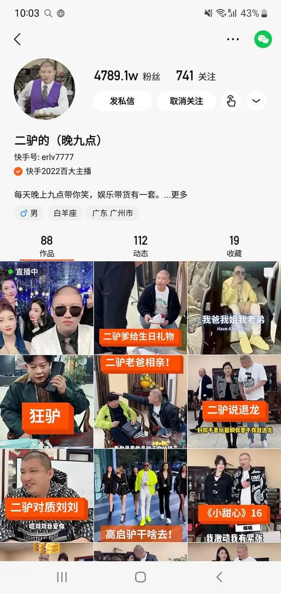
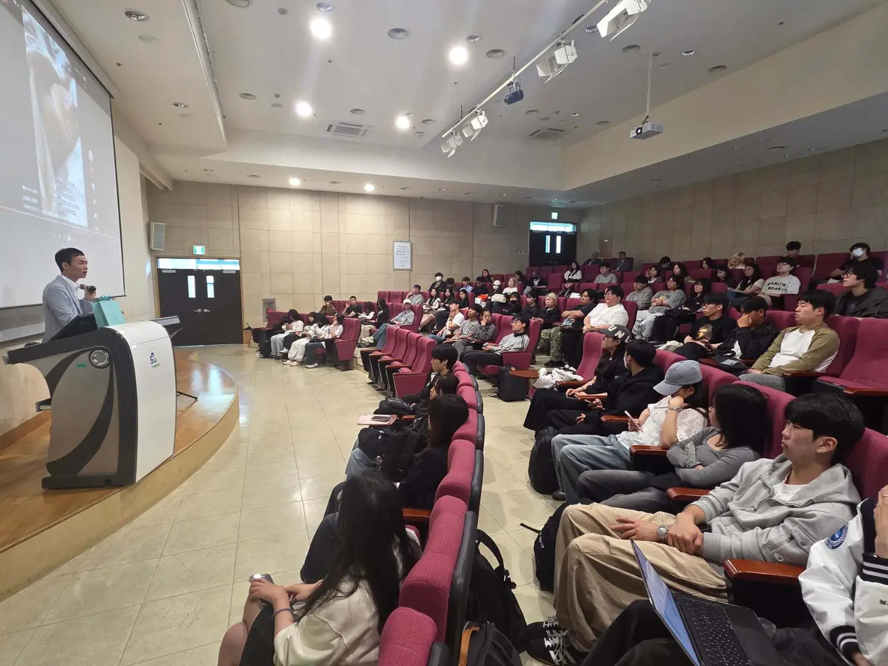
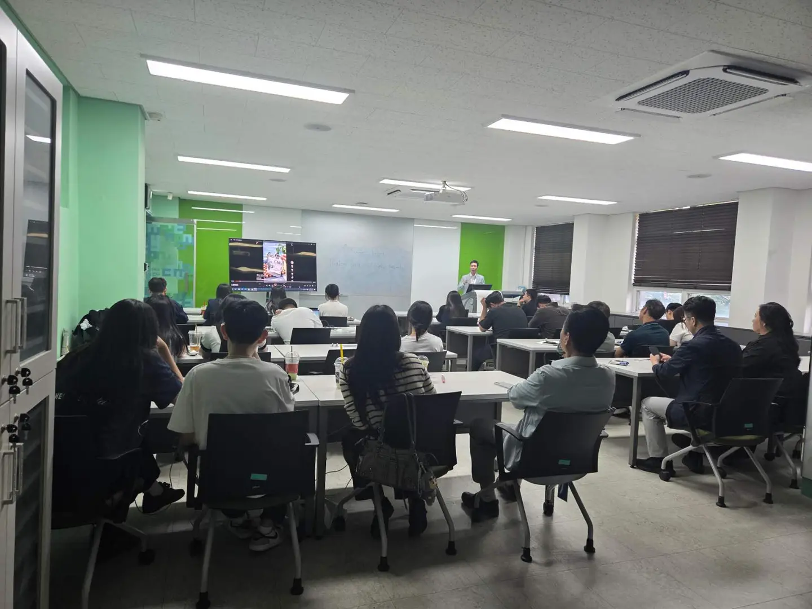

CHINA OPERATIONS · K-CONTENT PROJECTS
한국 브랜드와
K-콘텐츠의 중국 현장 실행China execution for
K-brands & K-content.韩国品牌与K-内容
中国本地落地执行
시장 진입과 판매 운영부터 한중 문화 행사·브랜드 협업까지.
실제 프로젝트 수행 경험으로 한국과 중국의 현장을 연결합니다.From market entry and sales operations to Korea–China cultural events and brand partnerships.
Connecting markets through real projects.从市场进入与销售运营，到中韩文化活动和品牌合作。
以实际项目经验连接两地市场。

CAPABILITIES
중국 시장 운영China Market Operations中国市场运营
시장 진입·유통Market Entry & Distribution市场进入与流通
시장 조건 검토, 현지 파트너, 판매 채널과 유통 운영Market review, local partners, sales channels and distribution市场评估、本地伙伴、销售渠道与流通运营
↗콘텐츠·라이브커머스Content & Live Commerce内容与直播电商
도우인·샤오홍슈 콘텐츠, 인플루언서 협업과 중국 판매 연계China-platform content, influencer collaboration and sales中国平台内容、达人合作与销售衔接
↗K-콘텐츠·교육K-Content & EducationK-内容与教育
한중 문화 프로젝트, 현장 행사와 플랫폼 실무 교육Korea–China programs, events and platform education中韩文化项目、现场活动与平台实务教育
↗FEATURED PROJECT / COMPLETED 2026.11
K-POP NEXT STAGE
상하이에서 실행한
K-콘텐츠와 브랜드의 만남K-content meets
brand experience in Shanghai.在上海连接
K-内容与品牌体验
2026년 11월 14~15일 상하이 한풍제에서 K-POP 경연 프로그램과 한국 브랜드 현장 협업을 진행했습니다. 참가자 운영, 무대·포토존 구성, 협찬 제품 배포와 후속 SNS 연계까지 하나의 프로젝트로 연결했습니다.At Shanghai Hanpungje on November 14–15, 2026, we delivered a K-POP competition program and on-site Korean brand collaboration, linking participants, stage operations, photo zones and follow-up social content.2026年11月14日至15日，项目在上海韩风节现场开展K-POP竞演与韩国品牌合作，衔接参赛运营、舞台、打卡区、赞助产品发放及后续社交内容。
행사 수행 사례 보기Explore the completed case查看已执行项目미디어: 행사 제공 영상에서 추출한 대표 프레임 3장과 무음 스케치. 전체 원본 영상은 별도 업로드 대상입니다.Media: Three original-video stills and a silent frame montage. Full source videos are not yet hosted.素材：来自实拍视频的三张截图与无声片段集锦。完整原视频尚未上线。
ON-SITE VIDEO FRAMES / NOVEMBER 2026
실제 행사 영상으로 본
K-POP NEXT STAGEK-POP NEXT STAGE
in original footage frames透过活动实拍视频截图
回顾K-POP NEXT STAGE


SELECTED REFERENCES
프로젝트 기록Selected Work项目记录

MARKET ENTRY · CHENGDU
한·중 소비재 협력플라자Korea–China Consumer Goods Plaza中韩消费品合作广场
K-POP NEXT STAGE · SHANGHAI · 2026.11
K-POP NEXT STAGE 상하이 한풍제K-POP NEXT STAGE at Shanghai HanpungjeK-POP NEXT STAGE 上海韩风节

INFLUENCER · CHINA
중국 인플루언서 협업China Influencer Collaboration中国达人合作

EDUCATION · KOREA
인플루언서·도우인 교육Influencer & Douyin Education达人与抖音教育
INFLUENCER & EDUCATION
현장 협업과
실무 교육Field collaboration
and education.现场合作与
实务教育
중국 인플루언서·라이브커머스 협업 경험을 국내 대학과 교육기관의 도우인 실무 교육으로 연결합니다.China influencer and live-commerce experience translated into practical education in Korea.将中国达人与直播电商合作经验转化为韩国实务教育。
자세히 보기Learn More了解更多 ↗

LOCAL & GLOBAL NETWORK
현지 실행 네트워크Local Execution Network本地执行网络
중국 현지 운영, 콘텐츠, 커머스와 교육 분야의 프로젝트별 파트너 구성.Project-based partners across local operations, content, commerce and education.涵盖本地运营、内容、商业及教育的项目型伙伴网络。
협력 네트워크View Network查看合作网络 ↗BUSINESS INQUIRY
중국 사업·협업 문의China Business Inquiry中国业务合作咨询
제품, 목표 시장과 필요한 업무를 알려주시면 검토 후 회신드립니다.Share your product, target market and required scope.请告知产品、目标市场及所需业务。
zesia@coregateglobal.com